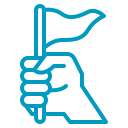
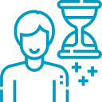
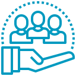

home>인재채용>인재상
인재상
동아쏘시오홀딩스는 개인의 자질과 업적에 근거합니다.공정한 승진, 평가제도 및 다양한 교육 인재 양성 제도를 운영합니다.
동아쏘시오그룹을 함께 이끌어갈 인재를 기다립니다.
-
혁신의 생활화
작은 혁신으로 시작하여 혁신의 크기를 지속적으로 발전시켜 나간다. -

새로운 시각
고정관념을 탈피하여 새로운 아이디어로 차별적 경쟁력을 확보한다. -

도전정신
실패를 두려워하지 않는 도전정신을 갖는다. -

성실함과 끈기
반드시 되게 한다는 성실함과 끈기를 갖는다. -
열린 마음
현실에 안주하지 않고 항상 열린 마음으로 변화를 수용한다. -
솔선수범
주도적인 자세로 솔선수범한다. -

사회적 책임
인류의 건강과 행복을 책임지는 Health care기업으로서의 사회적 책임을 다한다. -
책임의식
전문성을 기반으로 책임감과 주인정신을 갖는다.